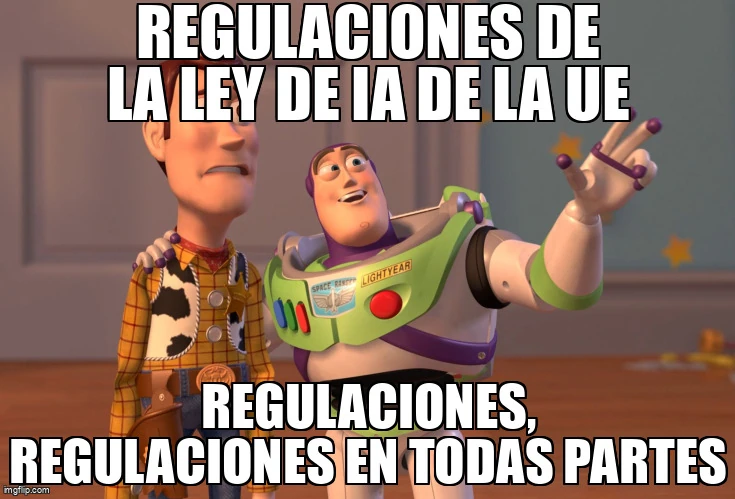

estrategIA #11 ·
Normas por todas partes
El contexto
Buzz Lightyear y Woody, los personajes de Toy Story, sirven para exagerar la cantidad de nuevas obligaciones de la ley europea de IA. Se publicó tras el acuerdo provisional de diciembre de 2023, cuando la regulación era el centro del debate.
Publicado en: estrategIA #11 La Unión Europea se adelanta en la regulación de la Inteligencia Artificial, ¿será suficiente para liderar globalmente?
Leer el texto de la imagen
REGULACIONES DE LA LEY DE IA DE LA UE REGULACIONES, REGULACIONES EN TODAS PARTES
Marca de la herramienta visible en el original: imgflip.com.